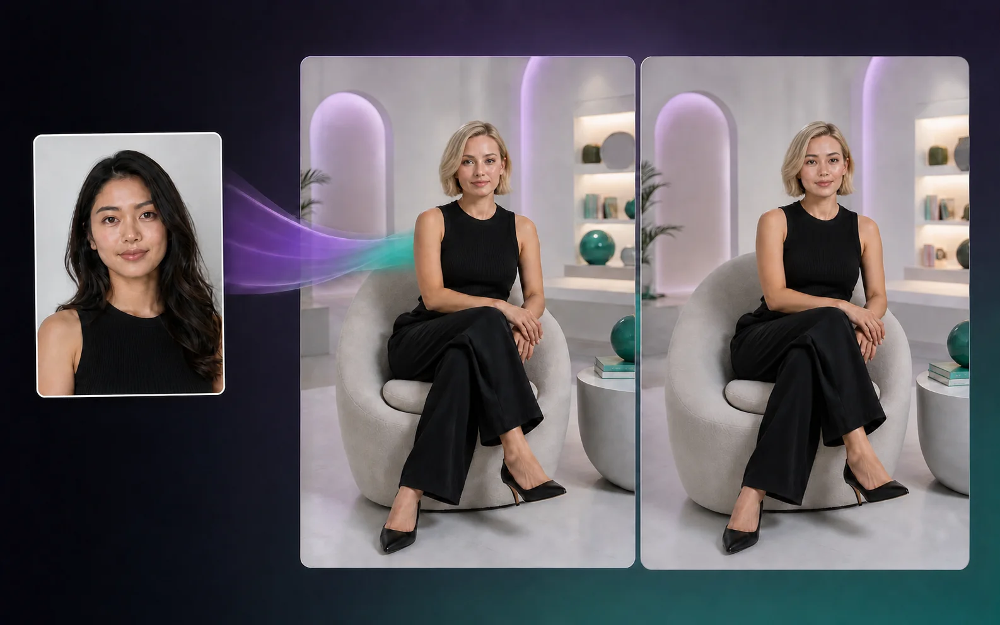
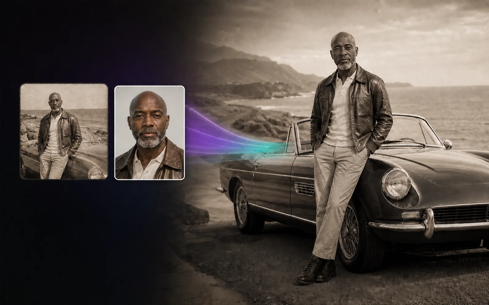

Добавьте лицо
Выберите чёткий снимок анфас при хорошем освещении.
Добавьте лицо, выберите фото или короткое видео — и Lucky Loki создаст результат. Навыки редактирования не нужны.
Начните с бесплатного пробного периода Lucky Loki Pro · После него автоматически начинается платная подписка с продлением каждые три месяца, если её не отменить

 ДоПосле замены
ДоПосле заменыПеретащите ползунок для сравнения. Оба кадра созданы с помощью ИИ.
Выберите чёткий снимок анфас при хорошем освещении.
Lucky Loki найдёт лицо и создаст результат.
Для ваших идей
Сделайте шутку эффектнее, упростите съёмку или адаптируйте креатив для новой аудитории.
Вставьте своё лицо в оригинальные мемы, реакции и короткие видео, используя контент, на который у вас есть необходимые права.
Добавьте себя или актёра, чей образ вы вправе использовать, в стоковое видео и создайте новую сцену без повторной съёмки.
Замените видимое лицо синтетическим персонажем, если хотите появиться в контенте, не раскрывая свою внешность.
Используйте в контенте с разными актёрами лицо, права на которое принадлежат бренду или надлежащим образом лицензированы.

Адаптируйте существующие материалы для разных рынков, используя лица, которые принадлежат вам или на использование которых у вас есть разрешение.

Обновите архивные или лицензированные материалы, заменив лицо и сохранив исходную сцену.
Используйте только контент и образы людей, на которые у вас есть законное право и необходимое разрешение. Личное и коммерческое использование разрешено при соблюдении Условий использования и Правил допустимого использования.
Lucky Loki Pro
Работайте с фото и короткими видео, не считая каждую замену.
Часто задаваемые вопросы
Да. Lucky Loki — приложение для замены лиц с помощью ИИ на iPhone и Android, которое работает с фотографиями и короткими видео. Добавьте исходное лицо, выберите целевой контент — и приложение создаст результат с заменённым лицом.
Lucky Loki заменяет выбранное лицо. Причёска, видимые участки кожи и тела, одежда, аксессуары, поза и фон берутся из целевого фото или видео.
Используйте чёткое исходное изображение анфас, снятое при равномерном освещении. Хорошо видимое целевое лицо под похожим углом обычно даёт более естественный результат.
Да. Lucky Loki можно использовать в законных коммерческих и профессиональных проектах, включая создание креативных материалов, брендированный контент, локализацию и адаптацию существующих видео. У вас должны быть необходимые права и разрешения на используемые лица и контент, а также активная подписка.
Нет. Пользовательский контент не используется для обучения, дообучения, улучшения или оценки моделей ИИ. Сохранённые вами изображения исходных лиц остаются в вашей галерее, пока вы их не удалите. Целевые фото, видео и созданные результаты временно обрабатываются для создания и передачи результата. В Политике конфиденциальности приведены подробности.
Для создания замен лиц требуется Lucky Loki Pro. Вы можете начать с бесплатного пробного периода. После его окончания автоматически начинается платная подписка с продлением каждые три месяца, если не отменить её заранее. App Store или Google Play покажет применимую цену и окончательные условия до подтверждения.
Выберите магазин приложений и начните бесплатный пробный период Lucky Loki Pro.
После пробного периода автоматически начинается платная подписка с продлением каждые три месяца, если её не отменить. Цена и окончательные условия отображаются в выбранном магазине до подтверждения.